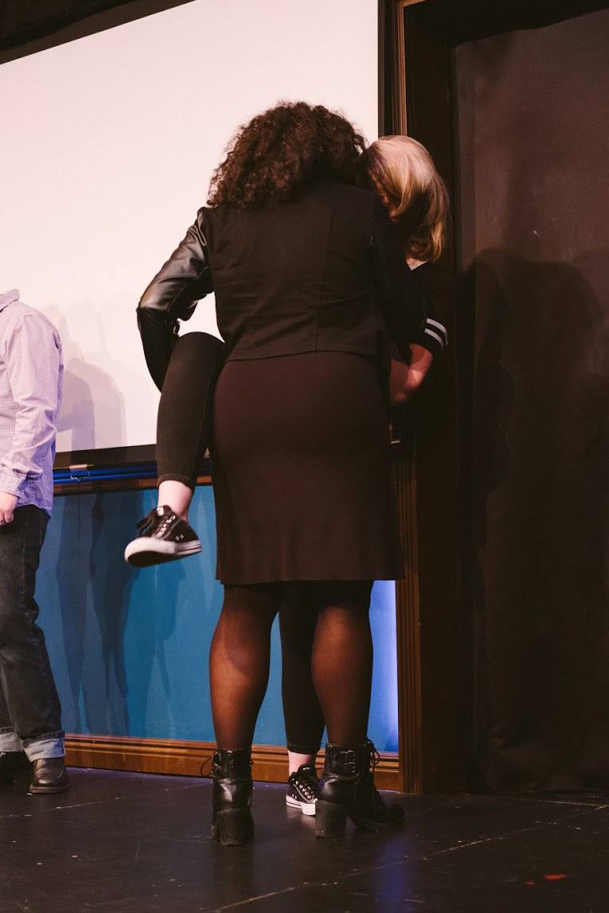
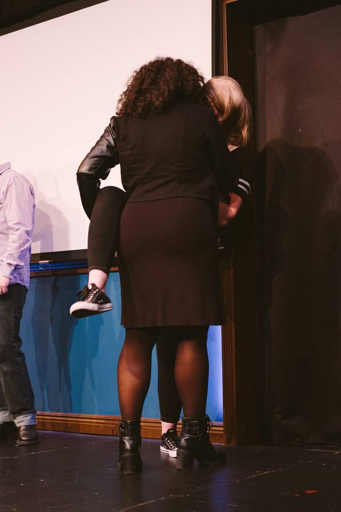
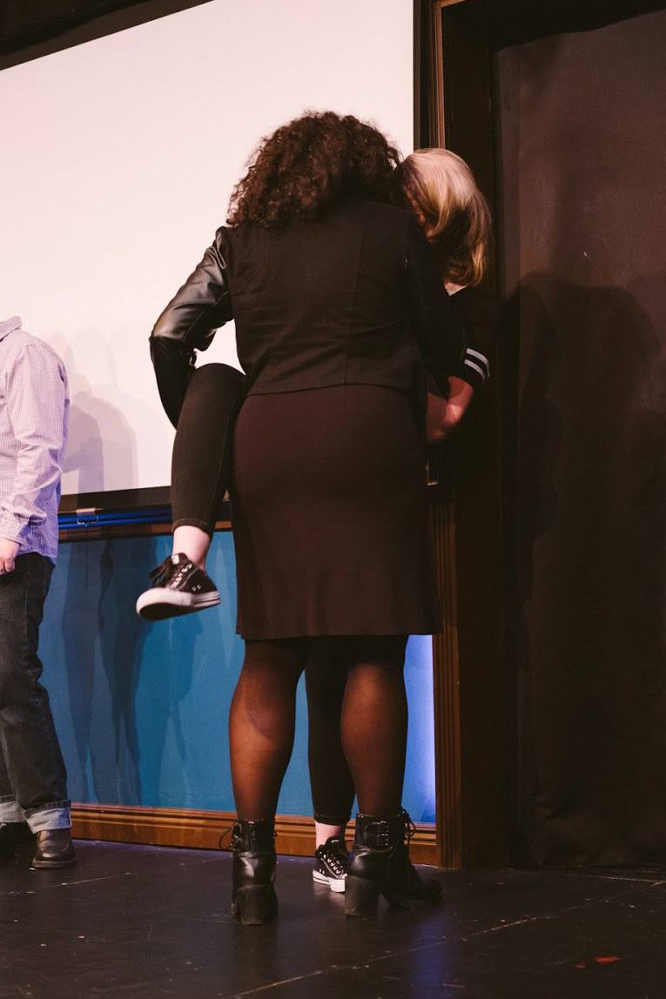
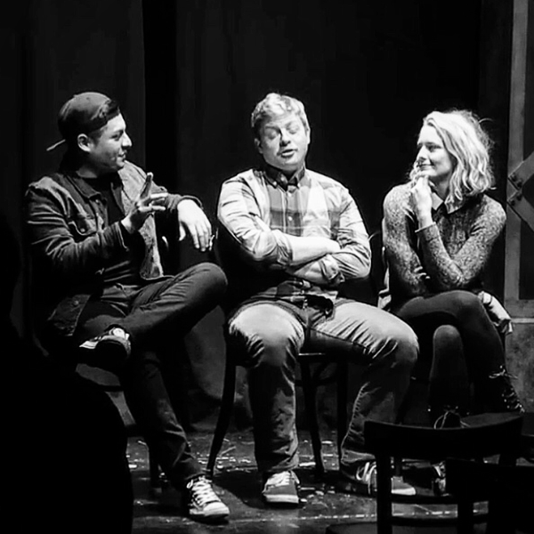
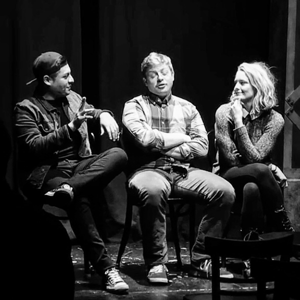

Marsden has studied improv at DSI (now The PIT) in North Carolina, Second City Chicago, iO, and with the Neo-Futurists. She is currently completing Second City’s Conservatory program. Marsden won two competitions at Second City’s Training Center with her troupe, Improv Murder, and subsequently completed two successful s how-runs in the De Maat Studio Theatre; Improv Murder and New Year Who Dis? Marsden’s improv troupe, Thicc & Emotional, has performed self-titled runs at The Playground Theatre and in Second City’s Donny’s Skybox Theatre. Marsden has also performed as a guest improviser with some of Chicago’s best troupes, including Matt Damon Improv, Girl Gang, and Gay Co.
For details about all of her upcoming shows, check out the calendar on the homepage!

 
